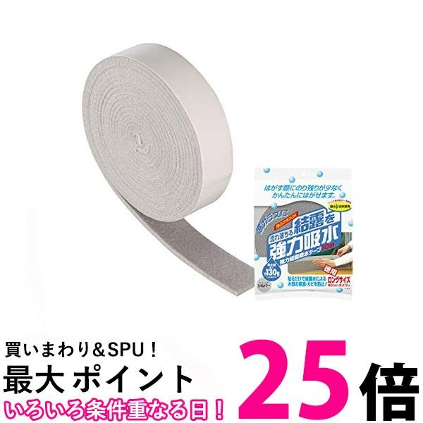
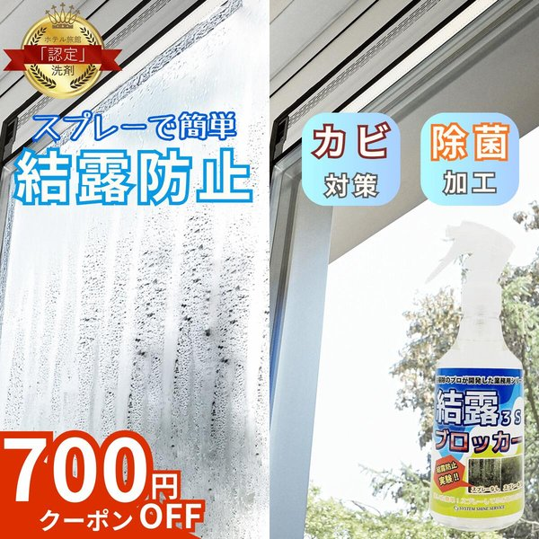
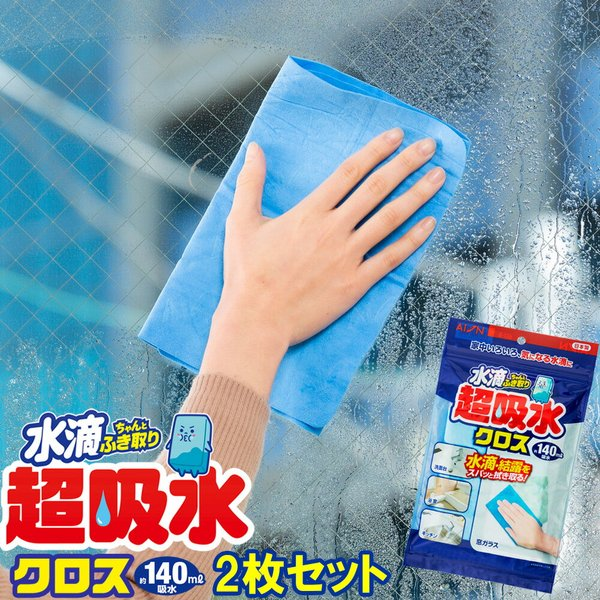
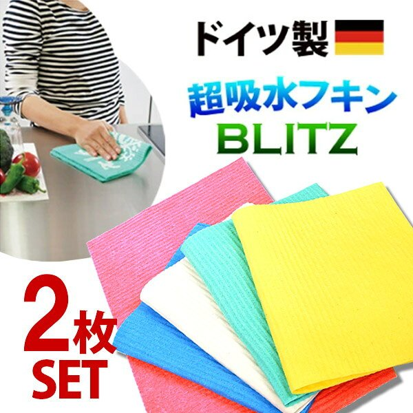
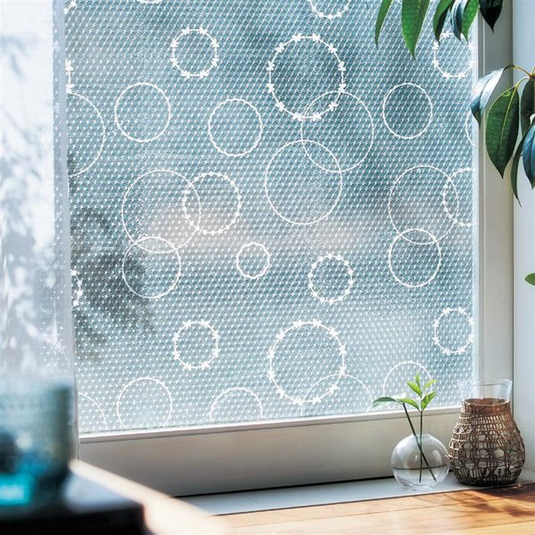
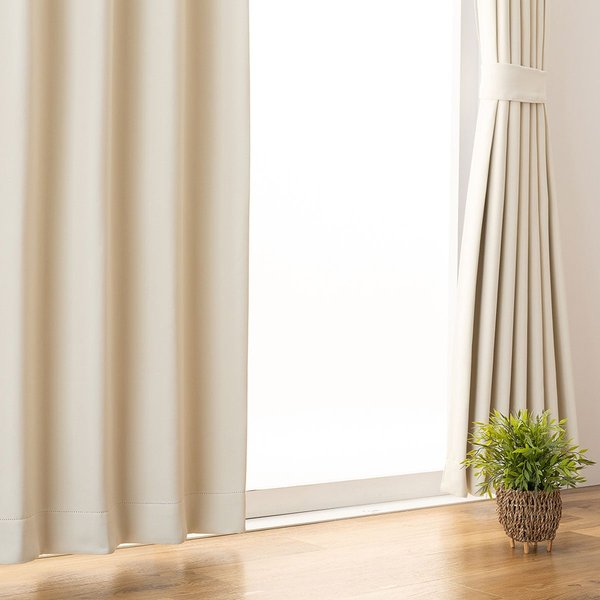
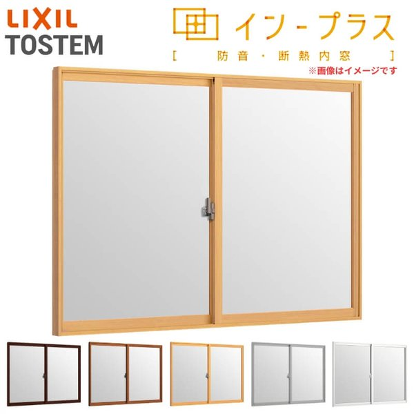
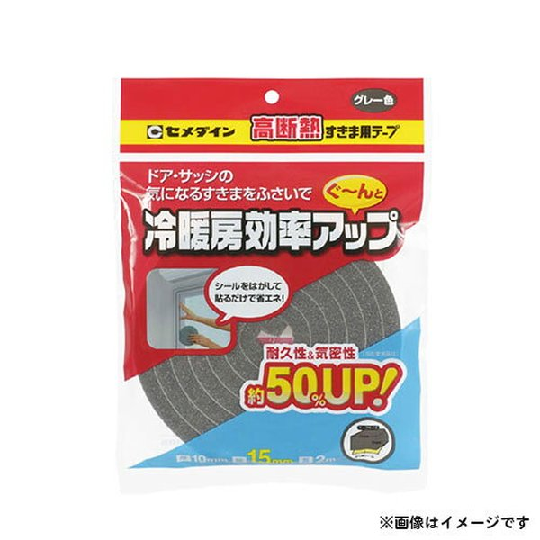
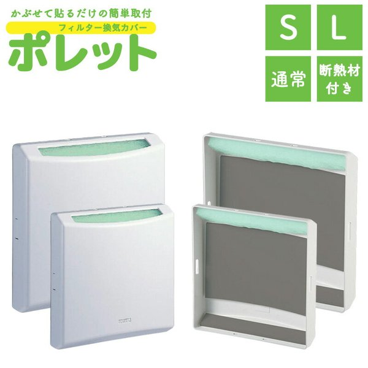
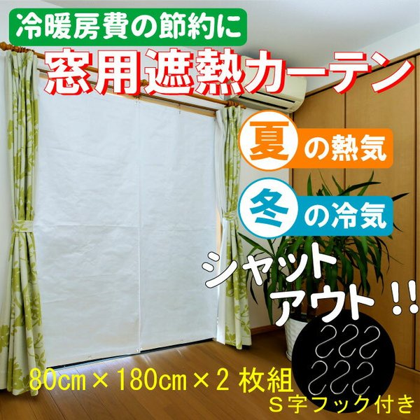

【2026年・冬の窓対策】結露・すきま風・冷気を防ぐ10選｜ニトムズ結露吸水テープ・結露ブロッカー3S・アイオン超吸水クロス・ベルメゾン断熱シート・LIXILインプラス・ナスタ ポレットを実売価格で比較
冬の窓辺には、結露とすきま風と冷気が一度に来ます。結露はカビとサッシの傷みにつながり、すきま風と冷気は暖房の効きを落とします。窓そのものを替えなくても、拭く・貼る・埋めるの3つでかなり変わります。
選ぶ軸は3つです。まず結露の量。水滴が垂れるなら吸水テープと拭き上げ用のクロス、膜を作って抑えたいならスプレーを選びます。次に窓の形。掃き出し窓は大判のシートかパネル、腰高窓は小さめのシートで足ります。最後にどこまでやるか。賃貸なら貼ってはがせるシートとすきまテープ、持ち家なら内窓まで検討できます。なお、レビュー件数が50件に満たない商品は記事内に実数を明記しています。
本記事では、楽天市場で人気・高評価の窓・玄関の結露・すきま風対策グッズ10選を、実売価格とレビュー評価つきで写真付き紹介します。
- おすすめ10選 スペック・特徴比較表
- BEST 1｜ニトムズ E1110 強力結露吸水テープ 10m シルバー（幅3cm）
- BEST 2｜スリーエス New 結露ブロッカー3S スプレー（結露防止コーティング）
- BEST 3｜アイオン 超吸水クロス2枚セット（超吸水スポンジ付き）
- BEST 4｜ブリッツ ドイツのフキン 無地2枚セット（レギュラー 約200×300mm）
- BEST 5｜ベルメゾン すりガラス対応 断熱・防寒 目隠しシート（90×180cm）
- BEST 6｜ニトリ 遮光1級・保温カーテン（無地 アイボリー・遮光率99.99%）
- BEST 7｜LIXIL インプラス 内窓 2枚建引き違い窓（単板ガラス透明3mm・W1501〜2000×H601〜1000mm）
- BEST 8｜セメダイン 高断熱すきまテープ TP-522（グレー 15mm×2m）
- BEST 9｜ナスタ 換気口カバー ポレット（Sサイズ・吸音断熱材付き）
- BEST 10｜ヒラカワ 遮熱・遮光シートカーテン 2枚組（アルミフィルム・80×180cm）
- 【読者負担0円】買わなくても得する無料サービス
- まとめ：窓・玄関の結露・すきま風対策10選の選び方
| 順位 | 商品名 | ブランド | 最大の特徴・おすすめ理由 | 総合評価 |
|---|---|---|---|---|
| BEST 1 | ニトムズ E1110 強力結露吸水テープ 10m シルバー（幅3cm） | ニトムズ（NITOMS） | サッシに沿って貼るだけで水滴を受け止める | 4.92 |
| BEST 2 | スリーエス New 結露ブロッカー3S スプレー（結露防止コーティング） | スリーエス（3S） | 吹いて拭くだけで結露を抑える | 3.75 |
| BEST 3 | アイオン 超吸水クロス2枚セット（超吸水スポンジ付き） | アイオン（AION） | 水滴を吸って絞れば繰り返し使える | 4.44 |
| BEST 4 | ブリッツ ドイツのフキン 無地2枚セット（レギュラー 約200×300mm） | ブリッツ（BLITZ） | 吸水が速く窓の水滴を残しにくい | 4.56 |
| BEST 5 | ベルメゾン すりガラス対応 断熱・防寒 目隠しシート（90×180cm） | ベルメゾン | 90×180cmで掃き出し窓に届く | 4.25 |
| BEST 6 | ニトリ 遮光1級・保温カーテン（無地 アイボリー・遮光率99.99%） | ニトリ | 遮光1級で朝の光を抑える | 4.35 |
| BEST 7 | LIXIL インプラス 内窓 2枚建引き違い窓（単板ガラス透明3mm・W1501〜2000×H601〜1000mm） | LIXIL（リクシル） | 既存の窓の内側に付けるだけで二重窓になる | 4.65 |
| BEST 8 | セメダイン 高断熱すきまテープ TP-522（グレー 15mm×2m） | セメダイン | すきまの凹凸に沿って埋まる | 4.67 |
| BEST 9 | ナスタ 換気口カバー ポレット（Sサイズ・吸音断熱材付き） | ナスタ（NASTA） | 後付けできる換気口カバー | 4.51 |
| BEST 10 | ヒラカワ 遮熱・遮光シートカーテン 2枚組（アルミフィルム・80×180cm） | ヒラカワ | 吊るすだけで断熱できる | 4.50 |
ニトムズ E1110 強力結露吸水テープ 10m シルバー（幅3cm）

ニトムズのE1110は、窓ガラスに貼って結露の水滴を吸い取るテープです。幅3cm・長さ10mのロールで、サッシの桟に沿って貼ると水滴が垂れにくくなります。吸水したあとは乾けば繰り返し使え、カビの原因になる濡れを減らせます。楽天市場での実売価格は約1,286円（2026年11月時点）。
- サッシに沿って貼るだけで水滴を受け止める
- 幅3cm×長さ10mで窓1面に足りる
- 乾けば繰り返し使える
- レビュー12件と少なく、貼る前にガラス面の汚れを落としておく必要がある
スリーエス New 結露ブロッカー3S スプレー（結露防止コーティング）

スリーエスの結露ブロッカー3Sは、窓やエアコンに吹きかけて拭き取る結露防止スプレーです。日本製で、窓のほか浴室や洗面所の鏡、ショーケースのガラスにも使えます。拭き上げのあとに膜が残り、水滴がつきにくい状態を保ちます。楽天市場での実売価格は約1,600円（2026年11月時点）。
- 吹いて拭くだけで結露を抑える
- 窓以外の鏡や浴室にも使える
- 日本製のスプレータイプ
- レビュー85件。効果の持続は窓の状態により、数日に一度の吹き直しが要る
アイオン 超吸水クロス2枚セット（超吸水スポンジ付き）

アイオンの超吸水クロスは、結露の水滴を一拭きで吸い取るクロスです。2枚セットで、窓のほかお風呂の鏡や洗面台、キッチンの水切りにも使えます。吸水スポンジが付き、拭いたあとに絞れば次の窓へ移れます。楽天市場での実売価格は約1,320円（2026年11月時点）。
- 水滴を吸って絞れば繰り返し使える
- 窓・浴室・キッチンに共用できる
- 2枚セットで洗い替えができる
- 吸水量が多いぶん、絞らずに置くと乾きにくい
ブリッツ ドイツのフキン 無地2枚セット（レギュラー 約200×300mm）

ブリッツはドイツ製のフキンで、乾いた状態で約200×300mmのレギュラーサイズが2枚入ります。吸水が速く、窓を拭いたあとに筋が残りにくいのが特徴です。結露を拭き取ったあとの仕上げや、窓ガラス・鏡の乾拭きに向きます。楽天市場での実売価格は約1,000円（2026年11月時点）。
- 吸水が速く窓の水滴を残しにくい
- 2枚入りで洗い替えできる
- 食器やガラスにも使える
- 薄手なので、濡れたまま強く絞ると型崩れしやすい
ベルメゾン すりガラス対応 断熱・防寒 目隠しシート（90×180cm）

ベルメゾンの断熱・防寒目隠しシートは、窓ガラスに貼るタイプのシートです。90×180cmの大判で、すりガラス調の柄が外からの視線を遮りながら光は通します。はがせる素材なので、賃貸でも冬のあいだだけ貼っておけます。楽天市場での実売価格は約2,080円（2026年11月時点）。
- 90×180cmで掃き出し窓に届く
- すりガラス調で目隠しになる
- はがせるので賃貸でも使える
- レビュー20件と少なく、貼る面の汚れや気泡は残りやすい
ニトリ 遮光1級・保温カーテン（無地 アイボリー・遮光率99.99%）

ニトリの遮光1級・保温カーテンは、遮光率99.99%の無地カーテンです。裏面の加工で窓から入る冷気を和らげ、暖房の効きを保ちます。アイボリーの落ち着いた色で、リビングにも寝室にも合わせやすい定番の一枚です。楽天市場での実売価格は約3,490円（2026年11月時点）。
- 遮光1級で朝の光を抑える
- 保温加工で窓際の冷気を和らげる
- 無地で部屋を選ばない
- レビュー48件と50件未満。遮光性が高いぶん、昼でも部屋が暗くなる
LIXIL インプラス 内窓 2枚建引き違い窓（単板ガラス透明3mm・W1501〜2000×H601〜1000mm）

LIXILのインプラスは、既存の窓の内側に取り付ける内窓です。2枚建ての引き違い窓で、単板ガラスの透明3mm仕様。幅1501〜2000mm×高さ601〜1000mmの範囲で、窓の寸法に合わせて選べます。二重窓にすると窓際の冷気と結露が減り、暖房の効きが変わります。楽天市場での実売価格は約21,390円（2026年11月時点）。
- 既存の窓の内側に付けるだけで二重窓になる
- サイズが選べてDIYでも取り付けられる
- 結露と冷気の両方を抑えられる
- レビュー57件。本体価格が高く、採寸を間違えると取り付けられない
セメダイン 高断熱すきまテープ TP-522（グレー 15mm×2m）

セメダインの高断熱すきまテープは、窓やドアのすきまに貼る断熱テープです。グレー15mm×2mで、柔らかい素材がすきまの凹凸に沿って埋まります。エアコンの配管まわりや引き戸の戸当たりにも使え、日本製です。楽天市場での実売価格は約546円（2026年11月時点）。
- すきまの凹凸に沿って埋まる
- 窓・引き戸・配管まわりに使える
- 日本製で粘着が安定している
- レビュー3件と少なく、貼る前にすきまの幅を測っておきたい
ナスタ 換気口カバー ポレット（Sサイズ・吸音断熱材付き）

ナスタの換気口カバー ポレットは、壁の給気口に後付けするカバーです。アレルフィルターが付き、外から入る花粉やホコリを抑えます。吸音・断熱材付きのタイプで、換気口から入る冷気と、隣の部屋の音が気になる部屋に向きます。楽天市場での実売価格は約2,310円（2026年11月時点）。
- 後付けできる換気口カバー
- フィルターで花粉とホコリを抑える
- 吸音・断熱材付きで冷気も入りにくい
- フィルターは定期的に掃除か交換が必要
ヒラカワ 遮熱・遮光シートカーテン 2枚組（アルミフィルム・80×180cm）

ヒラカワの遮熱・遮光シートは、窓枠に吊るして使うアルミフィルムのカーテンです。80cm×180cmが2枚入りで、はさみで切って窓の高さに合わせられます。夏は熱気、冬は冷気を遮り、結露の防止にも使える兼用タイプです。楽天市場での実売価格は約2,580円（2026年11月時点）。
- 吊るすだけで断熱できる
- 80×180cmが2枚入り
- 夏の遮熱と冬の防寒に兼用できる
- レビュー28件と少なく、アルミ面は光を遮るぶん部屋が暗くなる
この記事の商品を買う前に、まずは無料で得する選択肢をチェック。どれも登録・利用は0円で、無料期間中に解約すれば料金はかかりません。読みたい雑誌がある人、ポイントを貯めたい人、アンケートなら気軽という人、それぞれに合うものを選べます。
初回31日無料・無料期間中に解約すれば0円 → 楽天ポイントモール｜登録無料で毎日ポイ活
買い物なしでもポイントが貯まる無料サービス → 楽天インサイト｜アンケートに答えてポイント
登録無料・すきま時間のアンケートで貯まる → 楽天カード｜年会費永年無料
新規発行・年会費ずっと0円 →
4つのサービスの違いと使い分けは「出費0円で得する！買わずにポイントが貯まる無料サービス厳選4選」でまとめています。
💡 まとめ：窓・玄関の結露・すきま風対策10選の選び方
窓の対策は、結露・すきま風・冷気の3つに分けて道具を選ぶと揃います。結露は、ニトムズの結露吸水テープをサッシに貼り、水滴はアイオンの超吸水クロスで拭き取り、仕上げにブリッツのフキンで乾拭き。膜で抑えたいならスリーエスの結露ブロッカー3Sを吹きます。すきま風はセメダインの高断熱すきまテープで埋め、換気口からの冷気はナスタのポレットで受け止めます。窓全体の冷気は、ベルメゾンの断熱シート、ニトリの保温カーテン、ヒラカワのアルミシートで遮り、本格的にやるならLIXILのインプラスで二重窓に。まずは結露吸水テープとすきまテープの2つから始めると、効果を実感しやすいです。
楽天市場では「5と0のつく日」や「お買い物マラソン」などのキャンペーンに合わせて購入すると、ポイント還元が最大化してお得に手に入ります。ぜひチェックしてみてくださいね。